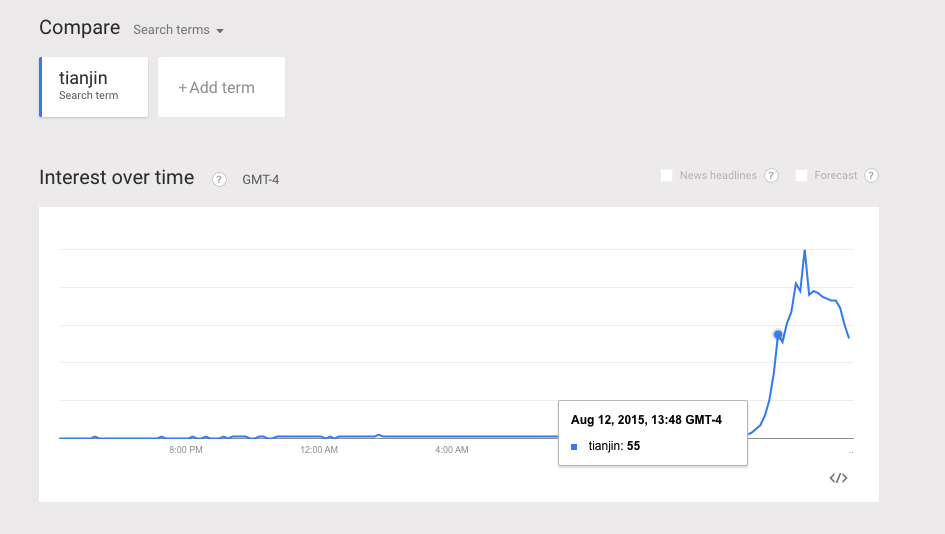
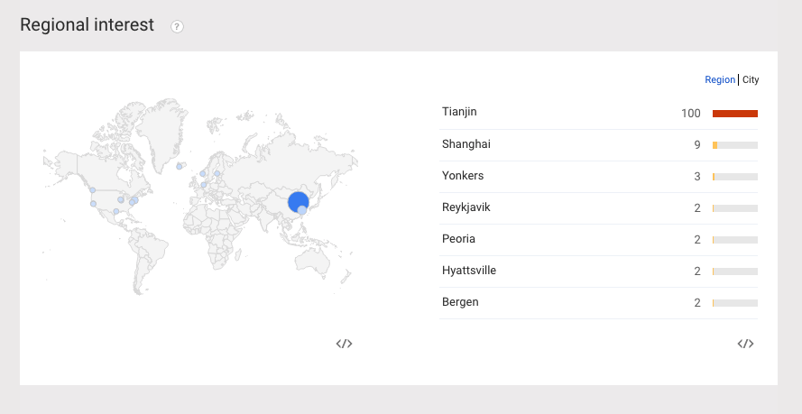
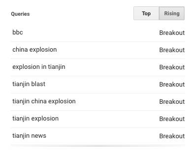
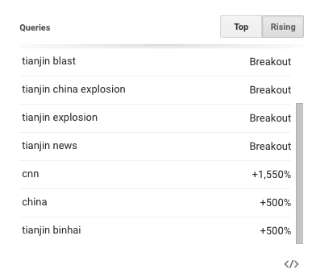
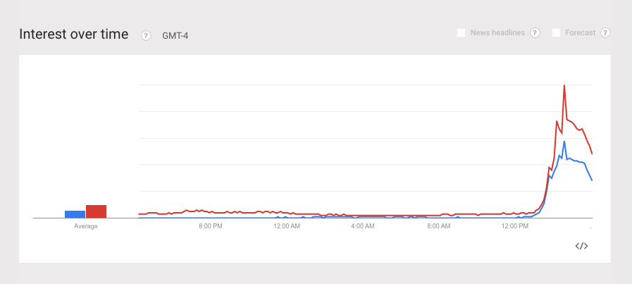
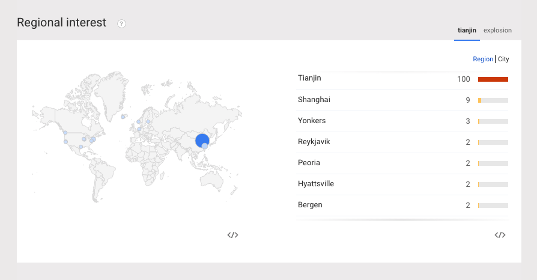

Getting to Know Trends: research roll
> Gay Pride Worldwide since 2004.
Q: Can you see gay pride in the search results, and what coarseness? Always peaks on the last Sunday in June, which is worldwide Pride Day.
> This is the United States view.
This is the past three months.
> Check how fine the data is and what cities ranked. And the same search with just 'gay pride', which might be the better search choice.
> Article research:
The state of AIDS, as seen in searching
> Q1: When did 'gay bar' emerge as a term, and 'gay club'?
> Q2: Are people searching for 'gay bar' (a common way to find hte nearest one) as much as 7 years ago, before Grindr?
The search term 'gay bar' versus 'gay club', since 2004; One state's city rankings; the ngram for the same thing since 1800s
> Search term 'gay bar' across cities over time. Used to locate local spots.
> The rise of the apps and, on the right, with Tinder, which dominates.
> A quick search for instant news. Looking at the Tianjin port explosion and how it got searched, vs the news pushes. The first image is noting the time I got a push notification form the Guardian (approx).





